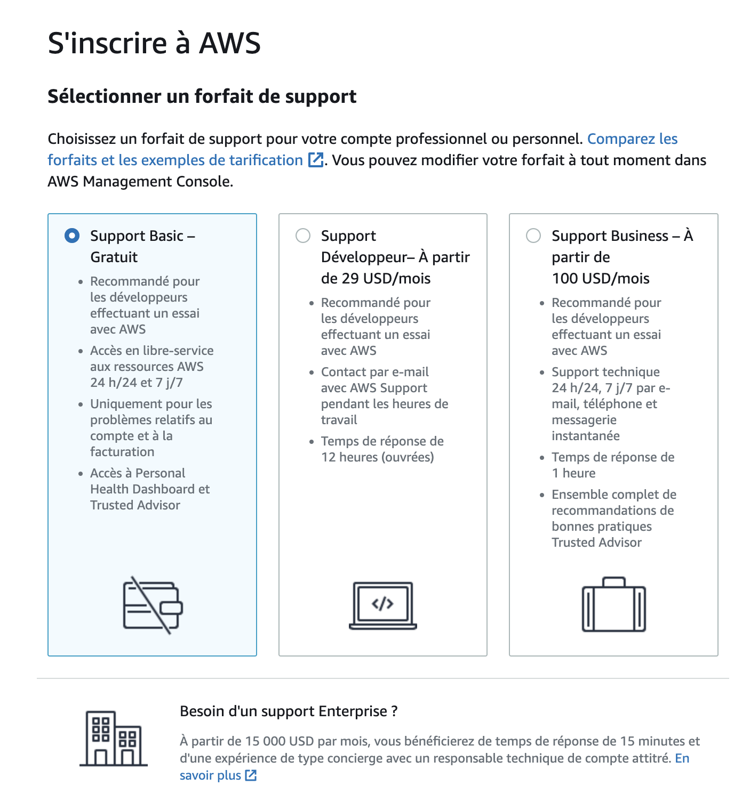
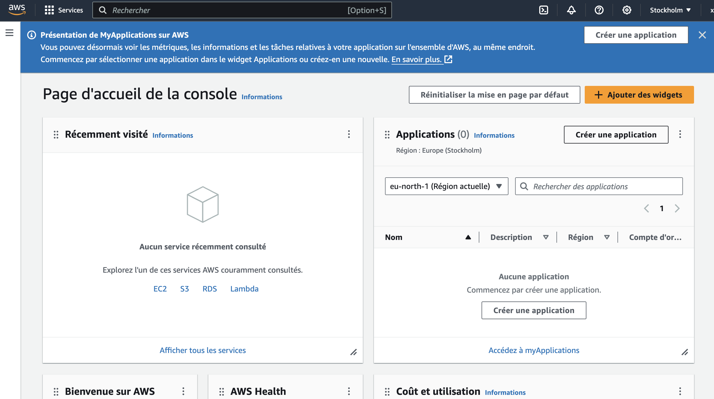
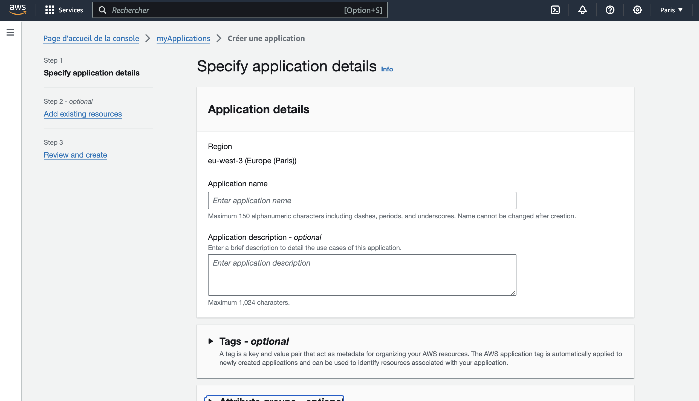

🥐 Willa - AWS HDS prise en main
Article du 12.12.2023Cette page est pour les startups incubées au sein de Willa qui souhaitent ouvrir un compte AWS car elles sont soumises à des normes spécifiques (gestion de données sensibles)
AWS appartient à Amazon et est l'un des plus gros service d'hébergement au monde. Il est aujourd'hui certifié HDS (Hébergeur de Données de Santé).
A noter que l'hébergement d'un site, d'une app doit absolument être
fait au sein de serveurs européens si l'on traite des données
sensibles.
Et la base de données doit, en plus d'être hébergée en Europe, être
sur un serveur HDS.
Plus d'information sur le HDS sur cet article : https://esante.gouv.fr/labels-certifications/hds/certification-des-hebergeurs-de-donnees-de-sante
Création de compte AWS
Relevez vos manches, gardez votre carte bancaire et téléphone à côté de vous car c'est plusieurs étapes de validation qu'il faudra passer avant d'accéder à sa page d'administration AWS 😬
- https://aws.amazon.com/fr/free/
- Se créer un compte
-
❗️ Attention, AWS demande de saisir des données bancaires (sans le
code CVV/CVC).
Pour confirmer l'association de votre compte bancaire dans les situations où un remboursement est dû, un prélèvement symbolique de 1 euro sera effectué. - Vous allez passer par des étapes de saisies d'informations personnelles (de l'associé.e qui sera en charge du compte)
- Vous terminerez par un KYC : un appel automatisé sera effectué sur le numéro que vous aurez renseigné. Durant cet appel, il vous sera demandé de saisir sur votre téléphone le code qui apparaîtra à l'écran.
La formule qui vous intéressera est gratuite durant 12 mois :
🚀 BRAVO ! Vous avez dorénavant accès à votre Dashboard.
Attention, ce n'est pas forcément évident à prendre en main, vous pouvez demander de l'aide à votre dev ou me solliciter pour un autre article tutoriel 😬
Prise en main
Pour commencer à créer sa première application, cliquez le bouton dans le cadre “Applications” à droite (ou sur le bouton sur la bannière bleue)

❗️ Attention, vérifiez bien que vous êtes sur Paris.
Dans l'exemple ci-dessus, si vous jetez un oeil au menu du haut (la
bande noir/sombre), je suis située à Stockholm 🤪 Il faut tout
simplement cliquer sur la liste déroulante pour sélectionner
Ensuite ?
A partir du stade ci-dessous, si vous n'êtes pas sûr.e de vous, je vous recommande fortement de le faire avec une personne Tech 😉
En espérant vous avoir aidé sur ces premiers pas !